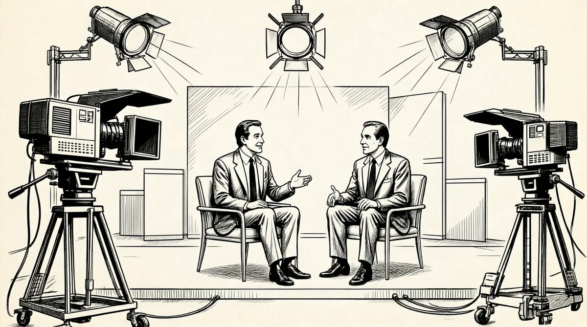

第29章 毛料是什么

虽然巴菲特掌管着5000万美元规模的合伙公司，并且拥有一家从事纺织生意的公司，可是他看起来永远就像电影《神秘人》中的人物1。他唯一不同于那个留着连鬓胡子，顶着一头长发的男人的地方就是，他只会偶尔让一小撮细细的黑头发从他的平头上长出来，像小草一样伸到他凸起的前额上。
世界上的其他人正在变得时髦。男人们开始穿尼赫鲁式夹克，套头高领毛衣，打全部都是几何图形或者花图案的领带。而巴菲特永远不会变样，他依然打着小且有斑纹的领带，穿一件白色的衬衫，尽管衬衫的领子变得紧了点儿。他成天穿着的旧灰色西服外套肩部塌了，并且领口还有洞。他拒绝丢掉他喜欢的驼色V领毛衣，虽然肘部已经磨薄了。他的鞋底还磨了洞。在一次宴会上，当查克·彼得森想把他介绍给一个有潜力的投资者时，那人的反应是：“你简直是在开玩笑！”纯粹因为巴菲特的衣着，他甚至都不想和沃伦交谈。2苏珊影响不了他，因为她丈夫的品位早在1949年，他在JCPenney公司卖西服的时候就已经形成了，那时兰福德先生告诉他：“没有人知道毛料是什么”。
现在，巴菲特到索尔·派的店里买西服，店铺就在基威特大厦的楼下大厅里，在那儿索尔总是试图提高他的品位。而巴菲特却把索尔看成一个“狂野的化装师”，对他的建议不理不睬。沃伦认为，一套合适的西服是“可以让内布拉斯加西部小镇上90岁的银行家穿着下葬的衣服”。3但是，索尔为能给巴菲特提供关于股票的好建议而自豪。他曾经指引巴菲特绕开帽子制造商拜尔–罗尔尼克公司，警告说那些帽子就要过时了。他还劝巴菲特不要投资奥克斯福德服装公司，告诉他20世纪60年代西服不是一门成长型的生意。4可是，巴菲特忽视了索尔的警告——不要买西服衬里制造商伯克希尔–哈撒韦。5
既然他对衣服一无所知，那为什么他职业生涯的下一个目标是买一个百货公司呢？这仍然有些神秘。那还要从1966年他为合伙公司找可买的股票时遇到了点儿麻烦说起。
他的一个新朋友戴维·桑迪·戈特斯曼带给了他最新的主意。戈特斯曼就和弗雷德·斯坦贝克、比尔·鲁安、丹尼尔·科文、汤姆·纳普、亨利·勃兰特、埃德·安德森、查理·芒格一样，按照自己的思路工作，并且把想法传递给他。是鲁安有一次在纽约吃午饭的时候把他们俩聚到一起的，与鲁安不同年毕业的哈佛校友戈特斯曼为一家小型的投资银行工作，有时会找到一两个剩余的“烟蒂”。6巴菲特认为他是一个精明自律、冷静、固执己见，而且满不在乎的资本家。自然他们志趣相投。
“从那时起，”戈特斯曼说，“每次有了一个好主意，我就会给沃伦打电话。这就像一个审查。如果你能让沃伦对什么事情感兴趣，你就知道自己的想法是正确的。”作为一个典型的纽约人，戈特斯曼高度评价他和巴菲特的交往，以至于他愿意经常跑到奥马哈。“我们会谈论股票直到深夜，”他说，“然后在次日的早晨我再返回纽约工作。每个星期日的晚上大约10点左右，我们会就股票谈上一个半钟头左右。一整个星期我都在期盼着那个会谈，并且一直在考虑我该和他谈哪只股票。但无论我和他谈哪一只股票，他都和我知道的一样多，大多数时间是这样。我挂了电话以后，通常要到深夜或者更晚才去睡觉，我一两个小时都睡不着，因为我被充了电。”
1966年1月，戈特斯曼告诉巴菲特一个想法：霍克希尔德–科恩公司。这是一家令人尊敬的百货公司，它的总部设在有一个城市街区大小的大楼里，位于巴尔的摩市中心的一个十字路口。虽然它的位置是在三个竞争对手——赫兹勒公司、赫克特公司以及斯图尔特公司——的斜对角上，但自从女士们开始戴上帽子和手套，乘电车前往市中心花一整天购物连同吃午饭时，这4家商店就蓬勃兴起了。备受关注的霍克希尔德–科恩公司卖服装、家居装饰品以及家用器皿。它的所有者，科恩家族开着旧汽车，过着简朴的生活——正是巴菲特喜欢的一类人。
这家公司的执行总裁马丁·科恩已经打电话告诉戈特斯曼，这个家族的好几个分支都在考虑出售公司，并且也许会接受一个折扣价。科恩家族的人“很为这个百货公司自豪，”戈特斯曼说，“不过，如果公司有好的女装部门，他们永远不会在那儿买一件衣服。对他们来说，那太贵了”。
查理·芒格在奥马哈的时候，他、巴菲特以及戈特斯曼通常会打高尔夫球，他们会坐在奥马哈乡村俱乐部的烧烤架旁边，喝上几罐冰茶，谈谈股票，开开玩笑。不过，虽然他们喜欢同一种类的股票，可他们三个从来没有在同一个交易上做过搭档。这一次，戈特斯曼打电话给巴菲特，告诉他有关折扣价的内容，以及科恩家族过度节俭的生活方式。巴菲特果然感兴趣。他除了小小的伍尔沃斯公司以外，没有其他的零售类股票。百货公司会随着时尚以及顾客的品位而起起落落，对于这些，他的了解无异于让他懂得如何去烤一个蛋奶酥。
他要芒格和他一起深入研究分析这次的业务。他们两个飞往巴尔的摩，立刻喜欢上了科恩家族的人。他们正直，值得信赖，城里到处都有他们的熟人。7有过和丹普斯特的李·戴蒙，以及伯克希尔的西伯里·斯坦顿打交道的经历，巴菲特知道，如果他想买一家公司，他必须找到一个他指望得上的经理人帮他打理。他认为路易斯·科恩就是那个合适的人选。科恩有金融背景，理解数字和边际利润。经过这些年引入300个合伙人，以及与数不清的企业主管会面的经历，巴菲特对自己评估人的能力很有信心。两个人看着资产负债表，当场提出用1200万美元购买。
芒格负责和路易斯·科恩的亲戚、外向活泼的首席执行官马丁谈判，他认为“这个不错的老家伙是这儿的头”。他对马丁·科恩说：“我在这儿看见很多脚踝肿胀的老年妇女站在你的香水柜台后面，她们是在靠资金不足的养老金计划供养。你一生的工作是为这些你也许要担心他们的养老金的人吗？你难道不担心你自己的养老金吗？”8科恩很快就认输了，速度快得让芒格都有点儿意外。9
1966年1月30日，巴菲特、芒格和戈特斯曼成立了一个控股公司，名字为“多元零售公司”，意思是要“争取多样化业务，尤其是在零售业”。10巴菲特拥有这家公司80%的股份，芒格和戈特斯曼各占10%。接着，巴菲特和芒格前往马里兰国民银行为这次收购申请贷款。信贷人员瞪大了眼睛看着他们，“为这个又小又旧的霍克希尔德–科恩公司支付600万美元？”11可即使听到这些话，很有个性的巴菲特和芒格还是毫不怀疑自己的判断，他们尖叫着冲出门外。
“我们认为，我们以三流的价格购买了二流的百货公司。”巴菲特这样描述这个又小又旧的霍克希尔德–科恩公司。
他还从没有为买一家公司借过这么多钱。但是，他们计算出安全边际将会降低风险，而且当时的利率便宜。百货公司的利润很薄，不过如果这些利润经年增长，而贷款利息不变，那么增加出来的利润就会跑到他们的口袋里（如果利润能够经年增长的话）。
“买霍克希尔德–科恩就像一个人买游艇的故事一样，”芒格说，“有两天高兴的日子，一个是买的那天，还有一个是卖的那一天。”12
路易斯·科恩和桑迪·戈特斯曼飞往拉古纳海滩，在那儿巴菲特一家租了一套房子。他们在附近的汽车旅馆躲了起来，巴菲特和他们俩一起制订战略计划。他已经开始喜欢上路易斯·科恩了。“他是你所能想象的优秀的人，智商高，又正派得体。我们买霍克希尔德–科恩的时候，他加入了合伙公司。我喜欢这个家伙。”科恩夫妇是他和苏珊可以交往的又一对夫妇——也就是说他和科恩谈生意的时候，苏珊可以招待科恩的妻子。现在巴菲特夫妇的社交生活，包括相当数量住在奥马哈以外的人，他们通常是在沃伦商务旅行中出现，或者就像现在，朋友们到加利福尼亚来拜访巴菲特夫妇。
不过，当科恩给他看公司规划已久的开两家新商店的计划时，巴菲特不由得开始担心起他的下一次巴尔的摩之旅。计划中的商店一个在宾夕法尼亚州的约克，另一个在马里兰州。这个想法是针对大批人从城市迁往郊区的现象，使人们能够在郊区的大型购物中心买东西。
他们筹划这两个商店已经好几年了。那些经营男士装饰品部的人已经规划好了这一块，确切知道将如何装饰它。那些经营昂贵女装部的女士们也完全计划好了。
巴菲特不喜欢冲突，而且也害怕让人们失望，不过他和芒格都认为这两个选址毫无意义。他取消了约克商店的计划，可是遭到了员工和管理层的抵制。由于实在没有去争论的欲望，巴菲特让步了。不过，他绝不允许在马里兰州的哥伦比亚开店。“我灭掉了这个计划。每个人都失望了，他们就这样放弃了。”
接着，成堆的麻烦接踵而来：只要4家店的其中一家提出安装电梯，其他三家也会提出同样要求；每次只要其中一家升级展示橱窗或者购买新的收银系统，其他三家都会如法炮制。巴菲特和芒格开始称之为“游行中踮着脚”。只要有个人干了什么事，每个人都不得不做同样的事。13
但是，这是巴菲特和芒格第一次发现他们可以合伙干的事情。通过新成立的多元零售公司，他们和戈特斯曼实际上创立了一个单独的拥有零售商的公司。霍克希尔德–科恩是这种可以在泡沫市场不断重复的模式的开端；巴菲特已经降低了投资的调整标准，因为他碰到越来越多的麻烦，发现他心目中的一项好投资和实际情况并不符合。
在这一单生意中，“我们充分受到了格雷厄姆精神的影响，”芒格说，“我们原以为只要你用自己的钱买到足够的资产，不管怎样你总能让它有点儿产出。而在百货公司再也不能自动产生优势的时候，我们没有充分衡量当时巴尔的摩4个不同商店之间的紧张竞争局势”。
在霍克希尔德–科恩的前两年，巴菲特已经搞清楚，零售业必须具备的技能是销售规划，而不是财务。他和他的合伙人们也充分学习了有关零售业的知识，知道这个行业很像酒店业：一场让人疲倦的马拉松，每一英里都有可能有新的、咄咄逼人的竞争者，往前一跃跑到你前面去。可是，当这三人有机会通过多元零售公司得到另一家零售企业——这一个非常不一样，而且由一个真正的商人掌管——他们还是冲了上去。这次是一个叫韦尔·费尔斯蒂纳的律师把机会推到他们面前的，费尔斯蒂纳曾经为霍克希尔德–科恩交易工作过。他打电话过来说：“如果你们对零售业感兴趣，这儿有一家联合棉布商店。”这家店卖女士服装。这次，沃伦离他基本的“竞争优势圈”走得更远，尽管在下一个故事里，他会遇见他一生中遇见的最伟大的职业经理人之一和其他一些人物。
“又小又便宜”，芒格如此形容联合零售商店，它是联合棉布商店的母公司。14看到一组三流的商店以四流的价格出售，他和巴菲特立刻产生了兴趣。这家公司拥有80家商店，销售额为4400万美元，每年可以挣几百万美元。63岁的所有人本杰明·罗斯纳主管折扣服装店，在芝加哥、布法罗、纽约以及印第安纳州的加里等城市里，以FashionOutlet、Gaytime和York这样的名字在生活艰苦的街区开店销售。有时，他会在同一个城市街区里，用不同的名称开几个很小的店铺，出售同样的货物。它们的规模大小不等，可以是纽约城里一套朴实的公寓，也可以是设备完善的郊区的房子。罗斯纳总是把日常管理开支缩减到最少，而且他只接受现金。管理这些批发商店需要特别的技巧。芝加哥密尔沃基大道商店的经理，一位大块头的、老练无情的女士，“如果看见她认为的在商店中行窃的小偷类型的人进来，她就会吹一声哨子，然后所有员工就会查看并且观察那个家伙。她太了解他们了，在你可以想象的条件最差的街区中任何你能找到的商店里，她这家店的‘缩水率’是最低的”。
本杰明·罗斯纳于1904年出生在一个奥匈帝国移民家庭，四年级就辍学了。1931年，正处于大萧条期间的经济滑坡阶段，他在芝加哥北部以3200美元的资本开了一家小小的商店，他有一个合伙人里奥·西蒙，还有一批每件卖2.88美元的衣服。1530多年以后的20世纪60年代中期，西蒙过世了，但罗斯纳继续把他的工资支付给西蒙的遗孀阿艾·西蒙（她是通信巨子摩西·安嫩伯格的女儿），以换取为他们的80个商店租金支票签名。
这样持续了大概6个月，接着她就开始抱怨、猜测，继而吹毛求疵。这些真让本杰明心烦。她实在是一个被宠坏了的女人。本杰明的原则是，就像他后来解释的，他可以欺负任何人，但他的合伙人除外。不过，现在在他的心里，她再也不是他的合伙人了。于是，他决定了结这一切。
既然有了这种想法，他就准备欺负她了。他认为，即使他只有一半的份额，他把生意卖给我也太便宜了，因为这是要给她看的。当我们和他会面的时候，他开始说话，我很快就搞清楚了整件事情。
巴菲特以前也和别人这样交谈过，一直谈到使对方认为如果没有公司，他们的生活能过得更好，巴菲特知道这时候不要去做任何干扰对方的事情。“他一直在说，他卖掉的是他花费了毕生心血打造的生意。他快要发疯了，因为他不能忍受这样做，但他也不能忍受她。他整个人一团混乱。于是，查理和我回到房间。大约过了半个小时以后，本杰明急得坐立不安。他说，‘他们告诉我你是西部最快的枪手！拔枪啊！’我回答，‘在我下午离开之前我会给你开出汇票’。”
巴菲特需要一个经理人，不过罗斯纳告诉他，他只能留到那年的年底，到时会把生意交给新的所有人。然而，巴菲特看得出，就像这个生意离不开罗斯纳一样，罗斯纳没有生意也不行。
他太爱这一行了，不可能放弃。他在卫生间里放了一套商店记录的副本，这样坐在马桶上的时候也可以看看。他有一个竞争对手，皮特里商店的米尔顿·皮特里。有一次，本杰明去沃德福参加一个大型宴会，米尔顿也去了。他们碰面后立刻就开始谈论生意。本杰明问：“你进灯泡多少钱？你标价多少钱？”那是本杰明所能谈论的全部。最后，他对米尔顿说：“厕纸你进货价多少？”米尔顿说了个数。本杰明比他的进货价要便宜不少，但是他知道你要买的不是便宜货而是合格的商品。米尔顿说：“是的，那是我能弄到的最好的。”于是，本杰明说了声“对不起”后，就起身离开了黑领结慈善晚会，驱车前往他在长岛的仓库，到了那儿就开始撕开装厕纸的纸箱，数里面的纸，因为他有疑问。他明白米尔顿不应该比他多付那么多钱，因此在厕纸这个商品上他一定是被蒙蔽了。
不出所料，厂商说每卷里面应该有500张，而事实上没有。他真的受欺骗了。
巴菲特知道，自己想和这种为了去数厕纸张数而离开黑领结宴会的人共事；这样的家伙也许会蒙蔽桌子对面的人，但永远不会欺负自己的合伙人。他和罗斯纳达成了600万美元的交易。为了确保他买下这个生意后，罗斯纳还能继续留下来工作，他奉承罗斯纳，弄清楚他得到的可以衡量生意表现的数字，不然的话就只剩下他一个人了。16
巴菲特和世界上的本杰明·罗斯纳们感受一致——他在他们的执着中看到了成功。巴菲特厌恶像霍克希尔德–科恩那样的问题公司，而是寻找更多的本杰明·罗斯纳们，他们能建立他愿意购买的出色的公司。
[1]“缩水率”：存货缩水的意思，就和它听起来的字面意思是一样的，存货有时会下落不明，通常是由于商店小偷行窃或员工行窃。——译者注